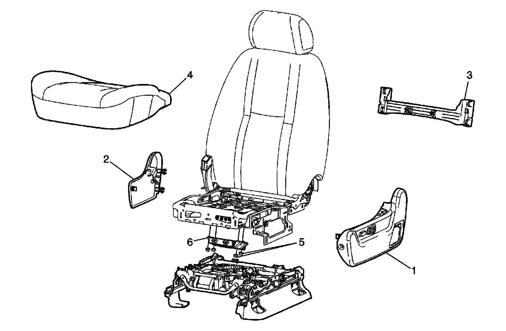
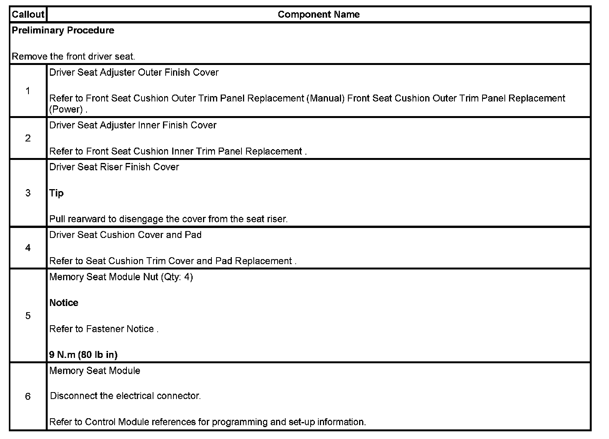

Operation CHARM
: Car repair manuals for everyone.
Home
>>
Cadillac
>>
2007
>>
Escalade ESV AWD V8-6.2L
>>
Repair and Diagnosis
>>
Accessories and Optional Equipment
>>
Memory Positioning Systems
>>
Memory Positioning Module
>>
Service and Repair
Memory Positioning Module: Service and Repair
MEMORY SEAT CONTROL MODULE REPLACEMENT

